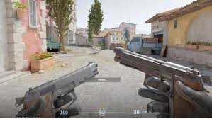
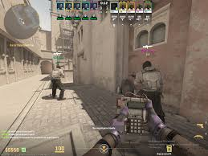
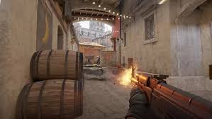

Early Game (Rounds 1–3)
Early rounds are usually chaotic because money is low and one round can swing the next two. Pistol round is momentum. If you win, you can often bully the next round with SMGs and armor.
Round 1 (Pistol)
- Decide quickly: armor vs utility vs kit (depending on side).
- Play for trades and numbers, not highlight plays.
- Sound matters more than people think.
Example: walking with Shift early can stop you from giving away a free rotate.
Rounds 2–3 (Anti-eco / Force / Save)
- If you won pistol: buy to keep advantage (often SMG + armor).
- If you lost pistol: either save cleanly or run a real force plan.
- Don’t do random half-buys unless the whole team agrees.
Early goal: build a money lead and take one key area.
Pistol round positioning and early engagements.
Mid Game (Rounds 4–10)
Mid game is when teams have rifles and full utility. This is where you can actually run real plans. If you don’t fight for space, you end up guessing which site is stacked.
What mid game usually looks like
- CTs use utility to stall and force the clock.
- Ts use utility to take space.
- Teams adapt to patterns and punish aggression.
Mid reminder: information is a weapon.
Mid-round map control and utility usage.
Late Game (Rounds 11+)
Late rounds feel more serious because one throw can ruin the economy. Late game is mostly discipline and decision-making.
Late priorities
- Utility timing matters.
- Clutches should isolate fights.
- Saves are sometimes the correct call.
Late goal: close rounds cleanly and protect the economy.
Late-round execution or post-plant scenario.